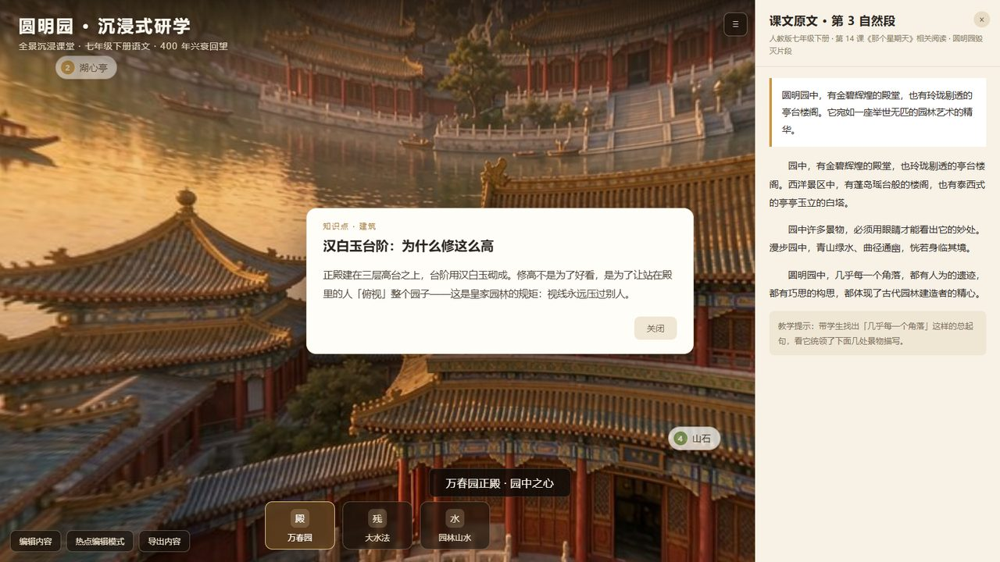
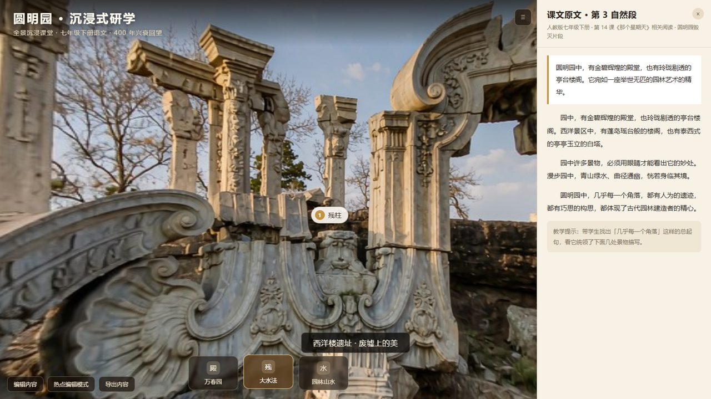
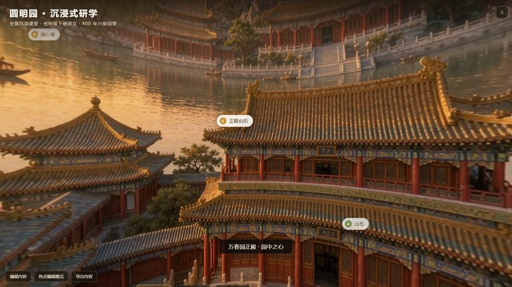
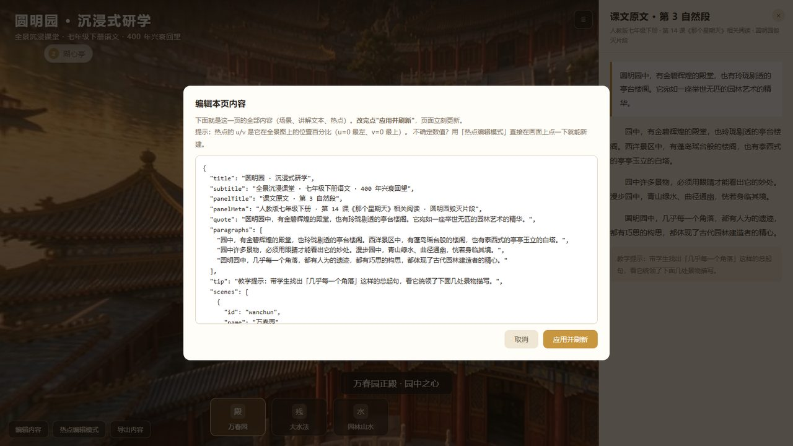
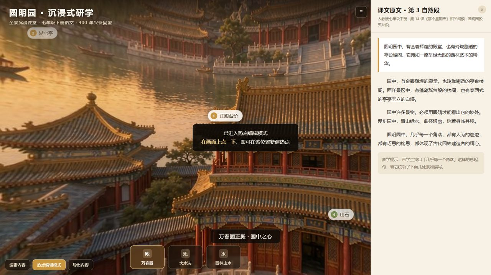
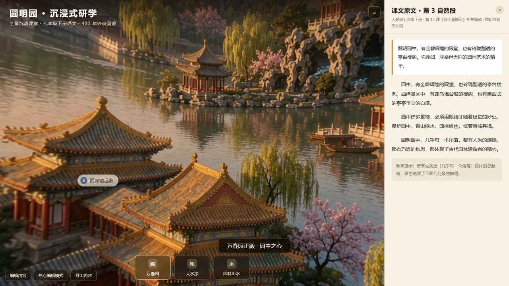

做一个能转的 360 课堂网页
不写代码、不装软件、不看原理。做完得到一个文件，双击就能转着看。
先看一眼你要做出来的东西
下面这个东西叫「360 全景互动网页」。它是一张能转的图。学生按住鼠标拖一下，画面就跟着转，像站在现场四下看。图上贴着几个小圆点，点一下就弹出一句讲解。

做出来长这样。左边是能转的画面，右边是课文讲解，底下是换场景的按钮。
| 这个东西能干什么 | 举个例子 |
|---|---|
| 画面能转 | 学生想看哪就转到哪，不用翻页 |
| 图上能点 | 点到「正殿台阶」就弹出一句讲解，讲完了关掉 |
| 能换地方 | 底下三个按钮，从万春园换到大水法 |
| 文字随时改 | 页面里有个「编辑内容」按钮，改完点一下就生效 |
| 发得出去 | 就是一个文件，微信直接发到班级群，学生双击打开 |
开始之前，准备 3 分钟
动手前先确认下面几件事，能省掉后面大部分麻烦。
| 准备什么 | 具体怎么做 |
|---|---|
| 一台电脑 | 能上网的 Windows 或苹果电脑都行。屏幕大一点更好做。 |
| 打开 WorkBuddy | 桌面双击 WorkBuddy 图标。如果没装，问学校的信息老师，或者搜「WorkBuddy 下载」。 |
| 什么别的都不用 | 全流程在 WorkBuddy 里 画图、做网页、改文字，全在这一个软件里完成。不用注册即梦，不用建文件夹，不用下载改名。 |
| 心里有数 | 这节课的课文是什么、你想让学生看懂什么。三分钟想清楚就够。 |
真出成方的也没关系，回一句「把这三张裁成宽高比 2 比 1」就行。别自己动手裁。
你做什么
打开 WorkBuddy，把下面这段话整段复制进去，然后把三个【】里的字换成你自己的。
我要做一个 360 全景互动网页，就是一个文件、双击就能打开、能用鼠标拖着转、图上点了会出讲解的那种，不用装任何东西。 课文或知识点是【《圆明园》毁灭片段，七年级下册语文】 我想让学生【能转着看园林景物，把课文里的描写和看到的画面对上号】 年级是【七年级】 风格想要【写实的历史复原感，夕阳暖光】（这一项可写可不写） 请先只给我方案，不要急着做。方案里说清楚三件事： 一、分几个场景，每个场景看什么； 二、每个场景上放几个可以点的知识点，点开弹什么； 三、每个场景配一张什么样子的图。 方案我确认之后，再把每个场景要生图的提示词写给我。
第一行【】填课文名和年级，比如《题西林壁》五年级语文上册。
第二行【】填你希望学生看懂什么，用大白话写就行，比如「看懂横看成岭侧成峰」。
第三行【】填年级。
风格那一行可以整行删掉，不写就让 WorkBuddy 自己定。
你会看到什么
WorkBuddy 会先不着急动手，先给你一份方案。大致长这样。
一、场景安排（3 个）
场景一 万春园正殿，看皇家园林的气派；
场景二 大水法遗址，看被毁后的残迹；
场景三 园林山水，看造园手法。
二、可以点的知识点
场景一放 4 个（正殿台阶 / 湖心亭 / 西洋楼远影 / 假山）；
场景二放 2 个（残柱 / 石雕）；
场景三放 2 个（九曲回廊 / 白塔）。
三、生图提示词
确认方案后我发给你，共 3 条，直接复制去生图。
你看完方案，觉得可以就回「方案可以」，要改就说「第三个场景换成山顶俯瞰」这种。
你做什么
看一遍方案。觉得行就回复 「方案可以，把提示词发给我」。
觉得不行就直接说人话，比如：
- 「场景太多了，两个就够了」
- 「我想换成《题西林壁》庐山的场景」
- 「第二个场景换成山顶俯瞰」
中国古典皇家园林全景，360 度全景图，宽高比 2 比 1。画面中心是万春园正殿，三层高台之上，汉白玉台阶，金色琉璃瓦大屋顶，殿前开阔庭院。远景是湖面、曲桥、亭台楼阁。夕阳暖光，水面倒影。写实历史复原风格，超高细节，不要文字，不要水印，不要人物特写。
提示词是哪儿来的
很多老师会卡在「这段话我得自己写吗」。完全不用自己写。这段话是 WorkBuddy 按下面这个固定的格式，把你填的课题自动拼出来的。
| 这句话里的部分 | 管什么 | 在上面那段里对应哪儿 |
|---|---|---|
| 主体 | 画面里最主要是什么 | 「万春园正殿」 |
| 空间 | 全景图的规矩 | 「360 度全景图，宽高比 2 比 1」 |
| 环境 | 周围还有什么 | 「远景是湖面、曲桥、亭台楼阁」 |
| 光线 | 什么时辰的光 | 「夕阳暖光，水面倒影」 |
| 风格 | 像照片还是像画 | 「写实历史复原风格」 |
| 不要什么 | 排除干扰 | 「不要文字，不要水印，不要人物特写」 |
你做什么
在同一个对话框里，接着发这一段。
请按你刚才给的提示词，一条一张，把三张图画出来。 要求横版宽幅，宽高比 2 比 1。 先让我看图挑一挑，我说可以之后再做网页。
你会看到什么
图一 万春园正殿（已生成）
图二 大水法遗址（已生成）
图三 园林山水（已生成）
你看一下这三张。不满意我可以重画，也可以只换其中一张。
图会直接显示在对话里，你看完回话就行。
用的是什么模型（老师问得最多的一句）
画这种风景、建筑、历史场景的图，它完全够用。 三张画下来大约花 15 到 30 积分，不额外收钱。
| 什么情况 | 选什么 |
|---|---|
| 画课堂用的全景图 （本文这种） |
用内置混元，别折腾 不用换模型、不用装技能、不用配密钥。够用，而且全程不出 WorkBuddy。 |
| 想要更写实、细节更强的画面 | 可以加装付费的图像模型（如 Gemini 3 Pro），但要自己配密钥、按张付费。 不建议老师们为这一个课件去弄，收益不大。 |
| 做中文海报、带中文字的图 | 那才轮到专门做海报的图像模型。做全景图用不上。 |
| 做架构图、流程图 | 跟本任务无关，不展开。 |
尺寸这一件，必须说清楚
你不用管这件事。两种情况都处理得了：
① 上面那段话里我已经写了「宽高比 2 比 1」，WorkBuddy 会尽量按这个出；
② 就算出成了 3 比 2，你只要回一句「把这三张裁成宽高比 2 比 1」，它自己会裁好，一步完成。
不要自己去截图、不要自己用画图软件裁。说一句话比动手快。
怎么挑图（三条标准，按重要性排）
| 标准 | 怎么判断 |
|---|---|
| ① 是横的 | 图明显横着，宽是高的两倍左右最好。竖的不要。 |
| ② 三张风格一致 | 三张放一起看，像同一个地方、同一种画法。一张照片一张漫画是最常见的毛病。 |
| ③ 内容对得上课文 | 讲圆明园就该有园林建筑。如果是现代楼房，就回去说「这不对，重画」。 |
不满意怎么办（都只用说话，不用动手）
你做什么
回到 WorkBuddy，把下面这段话发过去。
就用这三张图，按刚才确认的方案生成网页。 要求：生成一个文件就好，双击就能打开，不要让我装任何东西。 做完请告诉我，那个能直接打开的文件在哪儿。
你会看到什么
场景一 万春园正殿，4 个知识点；
场景二 大水法遗址，2 个知识点；
场景三 园林山水，2 个知识点。
做好了。直接打开的是这个文件
圆明园360研学.html（WorkBuddy 会告诉你具体在哪）
双击它，浏览器就打开了。不用装东西，不用联网也行。
你做什么
找到 WorkBuddy 说的那个文件，双击它。默认会用浏览器（Edge 或 Chrome）打开。
打开后你应该看到
- 一整屏的画面（不是黑的，不是空白的）
- 画面上贴着几个白色小圆点，写着「正殿台阶」这类小字
- 右边有一栏课文和讲解
- 底下有三个方块按钮，写着「万春园」「大水法」「园林山水」
看到这四样，就是做成了。
六个动作，一个一个来
如果拖不动，看是不是点了别的地方。要按在画面上拖。
读完点右下角「关闭」。

点开之后是这样。右下角「关闭」一点就收起来。
点「大水法」就换到遗址那张图了。按过的按钮会变亮。上课投屏的时候用这个。再点一下就恢复。

收起来之后就是这样，画面全屏，更好讲。直接在框里改，改完点「应用并刷新」。

改文字不用找文件，在这个框里改就行。还有一个很好用的东西
它会问你四句话，照着填就行：名字、标题、讲解、分类。
填完就多了一个能点的小圆点。

不用知道什么坐标，点哪儿就加在哪儿。
转过去才出现的「西洋楼远影」。上课可以让学生转着找。发什么文件
就发一个文件，就是你刚才双击打开的那个。
一般是 「圆明园360研学.html」 这种名字。
怎么发
https://yuanmingyuan-360.app.workbuddy.host/?sharecode=HJJGY35DN4
上课时怎么用
- 投影前先双击打开，按 「≡」 收起右边栏
- 讲到哪，就把画面拖到那儿，别一直指着屏幕不动
- 让学生上来动手转一下，比你讲十句都管用
- 讲完一个问题就点开对应的圆点，讲完关掉
换成你自己的课题，只改三个地方
上面全程用的是《圆明园》。换成你自己的课文，只要改三个地方，别的都不用动。
| 改哪儿 | 怎么改 | 举例（换《题西林壁》） |
|---|---|---|
| 第 1 步的三行 | 把【】里的课文名、教学目标、年级换掉 | 《题西林壁》，五年级语文上册 让学生从不同角度观察庐山 五年级 |
| 第 2 步的三张图 | 提示词换了，生成的图就是庐山了。图还是在对话里画，挑完直接用 | 画面换成「庐山山景，云雾缭绕，远近山峦层叠」 |
| 第 4 步改文字 | 网页做好后，点「编辑内容」把课文、讲解、知识点名字换成你的 | 课文原文换成《题西林壁》全文 |
语文 《题西林壁》看角度、《苏州园林》看造园、《登鹳雀楼》看远景。
地理 一条流域、一处地质构造，让学生找最高点、说坡度。
科学 校园植物、天坛回音壁、一个实验装置的四周。
历史 遗址、纪念馆、博物馆展陈现场。
总原则 凡是课文中提到「站在那儿能看到什么」的内容，都适合做。
卡住了怎么办（12 个常见问题）
按问题出现的先后排。基本覆盖了老师第一次做会遇到的所有坎。
最后三句话
一、这个东西的价值不在技术，在于画面能转。 PPT 上的圆明园只能看，学生用手一拖转到湖心亭，那个「身临其境」是学生自己发现的。
二、图可以是假的，现场一定要真。 AI 生成的图讲历史、讲地理、讲抽象空间都够用。讲你自己的学校、自己的实验室，一定要真拍。
三、第一次做，40 分钟差不多；第二份，15 分钟就够。 因为五个步骤里，只有挑图那一下是重复劳动。
如果这份手册对你有用
一、转给一个同事。同年级、同学科的老师最用得上。 一个人摸索 40 分钟，两个人一起 20 分钟。你踩过的坑，转出去别人就不用再踩一遍。
二、留一句话。说说你打算用在哪一课、哪个环节。 别人留下的选题，常常比自己想的更好用，看完心里就有数了。
三、拿完整版。这份是精简版。技术原理、可以自己改的部分、 五个「打开是黑的」的排查办法，都在完整版里。公众号后台私信发送 互动网页 四个字，自动发给你。
四、存一份到电脑。这份手册已经放到夸克网盘。 点文章底部的「阅读原文」，或者复制下面的链接到浏览器打开， 把它存到自己电脑里，断网也能翻。
https://pan.quark.cn/s/f28e18339f25 提取码 8Fct